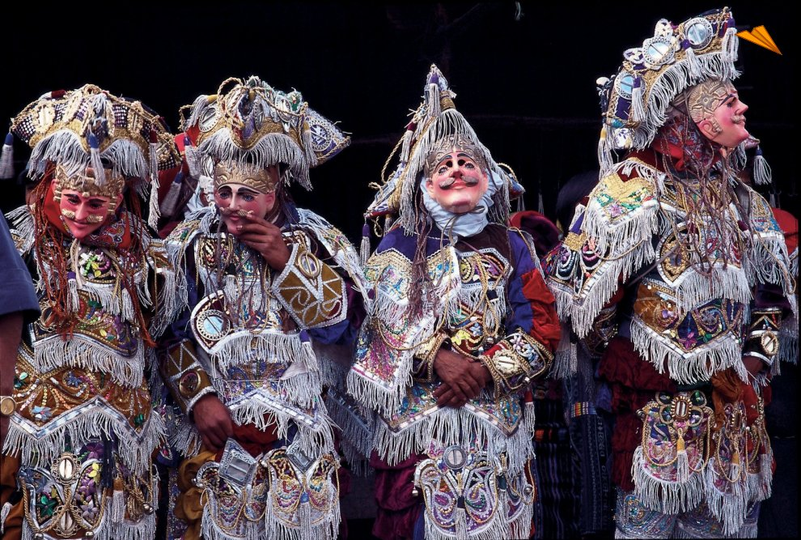

TRADICIONES
Hay rituales específicos relacionados con la siembra y cosecha de maíz, la caza y la pesca, la bendición y el uso de objetos ceremoniales. Durante estas ocasiones espirituales, los mayas suelen: Solicitar permiso para participar en una actividad que de alguna manera afecte al medio ambiente. (Siembra, caza, pesca) Expresar un favor especial que necesitan de los espíritus Pedir que los espíritus les sean benevolentes; Que no hay daño a aquellos que se dedican a una determinada actividad o residen / trabajan en una nueva estructura Expresar su reverencia por el espíritu que vive en un objeto como una máscara ceremonial, un instrumento musical o una residencia. Las actividades espirituales son solemnes y llenas de rituales. Cada generación Maya ha pasado a la siguiente generación, las formas específicas de llevar a cabo las prácticas espirituales. Los rituales pueden involucrar cierto orden de actividades, expresar oraciones específicas y la participación de personas particulares en la ceremonia.
COSTUMBRES
Las costumbres mayas en el campo de la educación reservaban la educación sólo para unos pocos. Así, la educación formal sólo se daba a los sacerdotes, guerreros o personas que debían ser preparadas para el liderazgo. Naturalmente, estas personas procedían de la nobleza. En cuanto a la gente común, no recibían ninguna educación formal. Su educación era informal y llevada a cabo por los ancianos de la familia en casa. Incluía diferentes temas desde la mitología maya y sus rituales hasta habilidades cotidianas como la agricultura y la caza. En la vida cotidiana, las costumbres mayas giraban en torno al trabajo, la ropa y las formas generales de vivir. La vestimenta maya variaba dependiendo del estatus social del individuo y por lo tanto los miembros de la nobleza usaban ropa más elaborada comparada a los plebeyos. Las costumbres y leyes mayas prohibían a los plebeyos usar ropa similar a la de los nobles. Los esclavos eran parte de la vida cotidiana de la nobleza, aunque las costumbres mayas les prohibían el uso de su propia gente como esclavos, así que los prisioneros capturados de otros pueblos eran utilizados para este propósito.

IDIOMA
Se sabe que la antigua civilización maya comenzó a producir palabras y a comunicarse hace más de 5,000 años. El idioma maya original es conocido como Protomaya o Nab’ee Maya’ Tziij en k’iche’. Aunque se extinguió hace mucho tiempo, se conoce que se fue desarrollando y adaptando. Incluso hasta extenderse a la comunicación textual a través de jeroglíficos. Algunos estudios datan que para el siglo XV había un aproximado de 30 idiomas mayas en toda Mesoamérica. A partir de este, se desplegaron 6 ramas idiomáticas conocidas como: Wasteka, Yukateka, Tzeltal Mayor, Q’anjob’al Mayor, Mam y K’iche’ Mayor. Siendo Tzeltal la que tuvo su despliegue en las regiones del occidente; específicamente en Huehuetenango, antes del mam y el k’iche’. No obstante, en Guatemala se hicieron análisis de grotocronología o evolución de las lenguas y se determinó que en el país solo se desarrollaron 5 ramas idiomáticas, porque no se reconocía el Wasteko. Además se dividió en oriental y occidental y a su vez se crearon subdivisiones de macro y micro familias.
PERIODOS
Preclásico —1300 a. C. al 300 d. C.— Es mayormente conocido por el desarrollo de la agricultura y sus técnicas de irrigación, que les permitió establecerse lejos de la costa. La caza, pesca y recolección se volvieron actividades complementarias después de la domesticación del maíz. Entre el 100 al 300 a. C. se realizó gran número de construcciones y asentamientos, algunos se volvieron ciudades. Luego, entre el 300 a. C. al 250 d. C. hubo crecimiento de la población y construcción de palacios, templos y pirámides de piedra. Período Clásico —300 d. C. al 900 d. C.— Durante este período el proceso cultural de los mayas alcanzó su máximo desarrollo, tanto en el campo tecnológico como en lo social, económico, político, religioso y artístico. Se construyeron canales de riego, aumentando la superficie cultivable y el comercio en regiones más extendidas. Se le llamó la Época de oro, donde alcanzaron el máximo desarrollo de todas las áreas de la ciencia. La escultura, matemáticas, alta astronomía, religión, calendario solar, medición del tiempo, medicina y operaciones craneanas tuvieron grandes avances. Período Posclásico —900 d. C. a 1521 d.C.— La mayoría de las regiones entraron en un rápido declive, especialmente en las tierras bajas del sur, las cuales quedaron en abandono. Hubo división entre los mayas, comenzó una etapa militarista y en consecuencia los rituales ceremoniales se hicieron cada vez menos importantes. En el norte de Mesoamérica gran parte de la cultura maya sobrevivió, continuando su desarrollo, pero afectados por influencias culturales de grupos extranjeros de habla nahuatl, donde construyeron una cultura maya tolteca. Durante este período las ciudades más destacadas fueron Chichén Itzá, Uxmal y Mayapán.